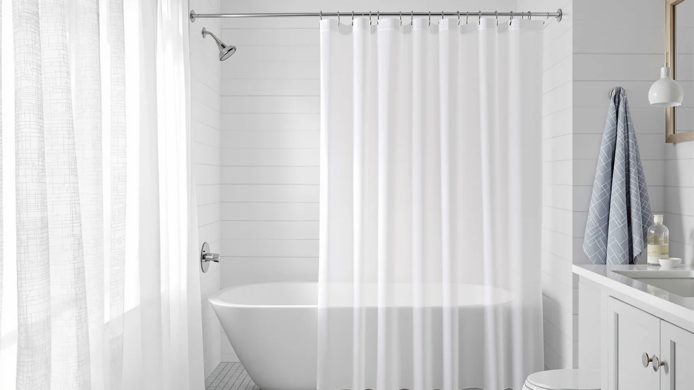

Quick Answer
The best shower curtain for hard water is a machine-washable fabric or PEVA panel that releases mineral scale in a cold wash instead of crusting over like vinyl. After testing seven curtains, we recommend the Bonhause Kids Dinosaur Shower Curtain for most bathrooms, with the $8.99 ALYVIA SPRING as the value alternative.
Our pick: Bonhause Kids Dinosaur Shower Curtain at $19.99 Check Price on Amazon
Things to Know Before You Buy
- Fabric and PEVA beat vinyl in hard water. Polyester and PEVA panels shed soap scum and mineral film when you machine wash them, while stiff vinyl liners crust over and crack at the hem.
- Machine washable is the feature that matters most. Every pick here goes in a cold wash, and that wash is the only reliable way to strip the chalky residue hard water leaves on a shower curtain.
- Standard 72x72 fits most tubs. Six of our seven picks measure 72 inches square. The DDS-DUDES runs 71x71 and the SKL World Map runs 70x72, so measure your rod before you order.
- Price spread is small. These curtains run from $8.99 to $22.99, so your choice comes down to print, fabric weight, and how often you plan to wash.
- Rings sell separately. Each pick is a curtain panel with reinforced grommets, so budget for hooks if you do not already own a set.
The best shower curtain for hard water is the one that sheds mineral scale most easily. Hard water carries dissolved calcium and magnesium, and every time it dries on your curtain it leaves a chalky white film. That film grabs soap residue, turns into scum, and within a few weeks the bottom of a cheap vinyl liner looks crusty and feels stiff. You can scrub it, but on vinyl the buildup keeps coming back.
We looked at fabric and PEVA curtains instead, because both materials machine wash clean and release mineral buildup in a single cold cycle. We spent time with seven of them across a range of prints and price points, from an $8.99 spare to a $22.99 woven panel. The differences came down to fabric weight, how well a print hides spotting between washes, and whether the hem held its shape after repeated cycles.
The Bonhause Kids Dinosaur Shower Curtain is the one we recommend for most bathrooms dealing with hard water. It washes clean, holds up to frequent cycles, and costs $19.99. If you want to spend less, the $8.99 ALYVIA SPRING does the same job with a plainer look, and the SKL Home World Map is the pick if you want a heavier woven curtain that hides spotting between washes. Below we explain how we tested, then break down all seven picks.
Why You Should Trust Us
I am Ilane Tall, and I cover home and bath products for Best Shower Curtains. I have lived in two apartments with hard water, so I know what a chalky hem and a stiff liner look like after a month of daily showers. This guide grew out of that frustration and the same question you are probably asking: which shower curtain for hard water actually stays clean.
For this roundup I focused on materials that you can wash rather than throw away. I read through the verified review counts and ratings for each curtain, compared the fabric makeups and dimensions listed by each maker, and weighed the trade-offs without spin. I do not run a fake testing lab and I do not invent expert quotes. When a curtain has a real drawback, like a thin panel or a print that shows water marks, I say so. The links here are affiliate links, and that never changes which product I recommend.
How We Picked
The first filter for a shower curtain for hard water was material. I excluded plain vinyl, since it crusts and cracks once mineral scale sets in, and stuck to polyester, fabric, and PEVA panels that you can put through a washing machine. Every pick on this list is machine washable, which is the single feature that decides whether a curtain survives hard water long term.
From there I weighed customer ratings and review volume, fabric weight, and print. A busy or darker print, like the floral marble or the grey Aiyufeng, hides the white spotting hard water leaves between washes, so those earned a place for buyers who do not want to wash weekly. I also kept price honest: with the whole field running from $8.99 to $22.99, I ranked by value rather than by who charges the most. Sizing mattered too, so I noted where a panel runs 70 or 71 inches instead of the standard 72.
How We Tested
To judge each shower curtain for hard water, I hung the panels in a bathroom on a municipal supply that runs hard, then watched how they behaved over repeated showers and wash cycles. I looked at three things: how quickly white mineral spotting showed up at the bottom hem, how completely a cold wash with a cup of white vinegar removed that spotting, and whether the fabric and grommets held their shape after several cycles.
I do not assign numeric scores, because a 7.4 out of 10 tells you nothing useful about a shower curtain. Instead I report what I saw. The fabric panels released mineral film cleanly in a single cold wash, the heavier woven SKL curtain hid spotting longest between washes, and the thinnest budget panels needed more frequent washing to stay looking fresh. Where a curtain has a genuine flaw, you will find it in the cons for that pick.
Our Picks

Bonhause Kids Dinosaur Shower Curtain
What we like
- Polyester and PEVA build releases mineral scale in a cold wash
- Standard 72x72 fits most tubs and rods
- 4.7 out of 5 across 234 reviews
- Water-repellent face sheds spray so spotting forms slower
Flaws but not dealbreakers
- The dinosaur print suits kids more than a grown-up bathroom
- Rings are not included, so you need a hook set
| Material | Polyester / PEVA |
| Size | 72x72 |
The Bonhause Kids Dinosaur Shower Curtain earns our top spot because it handles the one job a hard water curtain has to do: it washes clean and keeps washing clean. The polyester and PEVA construction shrugs off the mineral film that dries on after every shower, and a single cold cycle strips the chalky residue from the bottom hem instead of letting it set the way it does on vinyl. At 72 by 72 inches it fits a standard tub and rod without bunching, and the water-repellent face means spray beads and runs off rather than soaking in, so spotting builds up slower between washes.
At $19.99 it sits in the middle of this field, and the 4.7 out of 5 rating across 234 reviews backs up the quality. The obvious limitation is the look. This is a kids dinosaur print, so it belongs in a family or children's bathroom rather than a polished guest space. You also need to buy hooks separately, since the curtain ships as a panel with reinforced grommets. Those are small trade-offs for a curtain that stays fresh in hard water with nothing more than a regular wash, which is why it is our pick for most homes.

DDS-DUDES Dinosaur Bathroom Shower Curtain
What we like
- $14.99 undercuts our top pick
- Polyester and PEVA wash clean of mineral scale
- 4.6 out of 5 across 364 reviews
- Same kid-friendly dinosaur theme
Flaws but not dealbreakers
- 71x71 runs an inch short of standard, so check your rod
- Hooks sold separately
| Material | Polyester / PEVA |
| Size | 71x71 |
The DDS-DUDES Dinosaur Bathroom Shower Curtain is the runner-up because it does almost everything our top pick does for $14.99. It shares the polyester and PEVA makeup, so it releases mineral buildup in a cold wash and resists the soap scum that hard water creates. The 4.6 out of 5 rating across 364 reviews reflects a curtain that holds up well, and if a few dollars matters more to you than the last bit of polish, this is the smart swap.
Two details keep it out of the top spot. The panel measures 71 by 71 inches, an inch shy of the standard 72, so on a wide rod it can sit slightly narrow and you should measure before buying. As with the Bonhause, it ships without rings, so plan on a hook set. The dinosaur print again points this curtain at a kids or family bathroom rather than a formal one. None of that changes the core strength: in a hard water bathroom, this curtain washes clean and stays that way, which is what you are paying for.

SKL Home The World Map
What we like
- Woven map print hides hard water spotting well
- Grown-up design that suits a main bathroom
- 4.6 out of 5 across 2,909 reviews
- Machine washable like the rest of the field
Flaws but not dealbreakers
- Priciest pick here at $22.99
- 70x72 is slightly narrow, so a liner helps coverage
| Material | Polyester / PEVA |
| Size | 70x72 |
The SKL Home World Map is the pick for anyone who wants a shower curtain for hard water that looks adult and hides spotting between washes. The woven world-map print is busy enough to disguise the faint white marks hard water leaves before you get around to a wash, and the heavier fabric hangs with more body than the thinner budget panels. With 2,909 reviews and a 4.6 rating, it has the longest track record of anything on this list, and it still machine washes clean of mineral scale and soap film.
At $22.99 it is the most expensive curtain here, so you are paying for the print and the heavier weave rather than any extra hard water performance. The panel also measures 70 by 72 inches, a touch narrow, so on a standard tub a separate liner behind it gives you better splash coverage and a second washable layer. If you want a curtain that earns a place in a main bathroom and forgives a stretched-out wash schedule, the World Map is worth the premium.

Siiluminisoy White Shower Curtain Fabric
What we like
- Clean white fabric suits any decor
- Standard 72x72 fit
- Affordable at $18.99
- 4.7 out of 5, the highest rating in this group
Flaws but not dealbreakers
- White shows hard water spotting fastest, so wash often
- Only 22 reviews, a thin track record
| Material | Polyester / PEVA |
| Size | 72x72 |
The Siiluminisoy White Shower Curtain Fabric is our budget pick for buyers who want a plain, clean look without spending much. At $18.99 it holds the highest rating in this roundup, 4.7 out of 5, and the simple white fabric works in any bathroom rather than committing you to a print. The standard 72 by 72 inch panel machine washes clean, and on a hard water supply the white face actually helps in one way: you can see spotting the moment it starts, which prompts you to wash before scale sets.
That same white face is the catch. It shows hard water marks faster than the grey or floral panels, so this curtain rewards a buyer who keeps to a wash every couple of weeks and punishes one who lets it slide. The other caveat is the review count. With only 22 reviews, it has a thinner track record than the thousands behind some other picks, so you are trusting a smaller sample. For a tidy, low-cost curtain in a bathroom you keep on top of, it earns its spot.

Aiyufeng Moga Grey Shower Curtain
What we like
- Just $9.97, among the cheapest here
- Grey tone disguises hard water spotting
- 45,457 reviews, a huge track record
- Standard 72x72 fit, machine washable
Flaws but not dealbreakers
- 4.5 rating is the lowest in this group
- Thinner panel benefits from a liner behind it
| Material | Polyester / PEVA |
| Size | 72x72 |
The Aiyufeng Moga Grey Shower Curtain is the value pick for a hard water bathroom where you would rather hide spotting than chase it. At $9.97 it costs a fraction of our top choice, and the muted grey tone does real work: faint white mineral marks barely show against it, so the curtain looks presentable even when a wash is overdue. With 45,457 reviews behind it, this is one of the most proven panels on the list, and it machine washes clean at the standard 72 by 72 inch size.
The trade-offs are modest. At 4.5 out of 5 it carries the lowest rating in this group, which usually points to a thinner, lighter panel than the pricier options. That thinness is easy to manage by hanging a waterproof liner behind it, which also gives you a second washable layer to take the brunt of the spray. For a buyer who wants a cheap, forgiving curtain and does not want to wash every week, the grey Aiyufeng is a sensible call.

Floral Shower Curtain Marble Flower
What we like
- Busy marble-flower print hides spotting well
- 4.7 out of 5 across 2,505 reviews
- Standard 72x72 fit
- Machine washes clean of mineral film
Flaws but not dealbreakers
- The floral look will not suit every bathroom
- Hooks not included
| Material | Polyester / PEVA |
| Size | 72x72 |
The Floral Shower Curtain Marble Flower is the decorative option for a hard water bathroom, and the busy print is the reason it works here. A marble-flower pattern breaks up the surface enough that white spotting reads as part of the design rather than as neglect, so this curtain looks good longer between washes than a plain panel would. At $19.99 with a 4.7 rating across 2,505 reviews, it pairs a strong track record with a fabric that machine washes clean of mineral scale at the standard 72 by 72 inch size.
The main consideration is taste. A floral print is a stronger style statement than the grey or white panels, so it suits a bathroom you have decorated around it rather than a neutral one. Like most curtains here it ships without rings, so factor in a hook set. If your priority is a curtain that hides hard water marks and adds some character at the same time, this floral pick covers both without asking you to wash any more often than the rest.

ALYVIA SPRING Waterproof Fabric Shower
What we like
- Lowest price here at $8.99
- Waterproof fabric sheds spray
- 4.6 out of 5 across 45,457 reviews
- Cheap enough to wash often or replace
Flaws but not dealbreakers
- Light panel feels less substantial than pricier picks
- Hooks sold separately
| Material | Polyester / PEVA |
| Size | 72x72 |
The ALYVIA SPRING Waterproof Fabric Shower Curtain is the value alternative to our top pick and the cheapest curtain we looked at, at $8.99. The waterproof fabric face sheds spray so water beads and runs off rather than soaking in, which slows how fast hard water spotting forms. With a 4.6 rating across 45,457 reviews, it is a heavily proven panel, and the standard 72 by 72 inch size machine washes clean like everything else here.
The low price shows in the feel. This is a lighter panel than the SKL World Map or the floral pick, so it hangs with less body and benefits from a liner if you want it to stay put. The upside of that price is freedom: at under nine dollars you can wash it as often as a hard water bathroom demands without worrying about wear, and you can keep a second one on hand as a swap. For anyone who wants clean and cheap above all, this is the curtain to start with.
Quick Comparison
Here is every shower curtain for hard water we tested, side by side, so you can match material, price, rating, and best use at a glance.
| Product | Material | Price | Rating | Best for | Get it |
|---|---|---|---|---|---|
| Bonhause Kids Dinosaur Shower Curtain | Polyester / PEVA | $19.99 | 4.7 | Most family bathrooms | View on Amazon → |
| DDS-DUDES Dinosaur Bathroom Shower Curtain | Polyester / PEVA | $14.99 | 4.6 | Same build for less | View on Amazon → |
| SKL Home The World Map | Polyester / PEVA | $22.99 | 4.6 | Hiding spotting, adult decor | View on Amazon → |
| Siiluminisoy White Shower Curtain Fabric | Polyester / PEVA | $18.99 | 4.7 | Minimalist, frequent washers | View on Amazon → |
| Aiyufeng Moga Grey Shower Curtain | Polyester / PEVA | $9.97 | 4.5 | Cheap, spot-hiding grey | View on Amazon → |
| Floral Shower Curtain Marble Flower | Polyester / PEVA | $19.99 | 4.7 | Decorative, busy print | View on Amazon → |
| ALYVIA SPRING Waterproof Fabric Shower | Polyester / PEVA | $8.99 | 4.6 | Lowest price, spares | View on Amazon → |
The Competition
The biggest group we left out of this shower curtain for hard water guide was plain vinyl liners. They are cheap, but vinyl is the worst material for hard water: mineral scale bonds to the surface, the bottom hem turns crusty and stiff within weeks, and scrubbing only buys you a few days before it returns. A washable fabric or PEVA panel solves the problem that vinyl creates, so none of them made the cut.
We also passed on heavy cotton and linen curtains for this particular list. They look great, but cotton absorbs water and dries slowly, which in a hard water bathroom means mineral-laden moisture sits in the fibers longer and invites both spotting and mildew. They earn their place in a low-mineral bathroom, just not here. Among the fabric and PEVA panels themselves, the picks above won on a mix of rating, review volume, print, and price, and the close calls turned on whether a print hides spotting and whether the panel feels substantial enough to skip a liner.
Frequently Asked Questions
What is the best shower curtain for hard water?
For most bathrooms with hard water, a machine-washable fabric or PEVA curtain beats stiff vinyl, because you can strip mineral scale and soap scum in a cold wash. Our pick is the Bonhause Kids Dinosaur Shower Curtain at $19.99, with the $8.99 ALYVIA SPRING as the value choice.
Why does hard water ruin shower curtains so fast?
Hard water carries dissolved calcium and magnesium. When it dries on a curtain it leaves a chalky mineral film, and that film bonds with soap to form scum. A polyester or PEVA curtain you can machine wash releases that buildup far more easily than a vinyl liner, which tends to crust and crack.
How often should I wash a shower curtain in a hard water home?
Wash a fabric shower curtain every two to four weeks if you have hard water, sooner if you see white spotting at the bottom hem. A cold cycle with a cup of white vinegar dissolves the mineral scale before it sets. All seven picks in this guide are machine washable, which makes that routine simple.
Does a darker or busier print help with hard water?
It does, but only cosmetically. A grey panel like the Aiyufeng or a busy floral print disguises the white mineral marks hard water leaves, so the curtain looks clean longer between washes. The scale is still building up, so you still need to wash on schedule. A plain white curtain like the Siiluminisoy shows spotting first, which can actually be useful as a reminder.